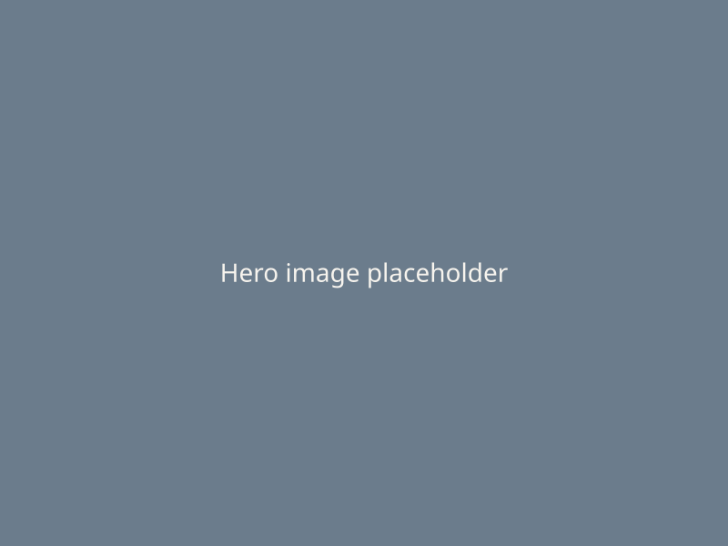

A moment, kept for later
A Revist capsule gathers photos, notes, and little details from a moment you want to revisit. Choose a future date, seal it away, and let time make the memory even more meaningful.
Explore shared capsules Make your own sample


Small moments, saved with intention
Think of a time capsule as a note to your future self. Choose what to save, pick a date to open it, and decide whether the memory should stay private or be shared with the community.
This class-project preview uses sample content only. The forms demonstrate the idea; they do not create accounts or store personal information.